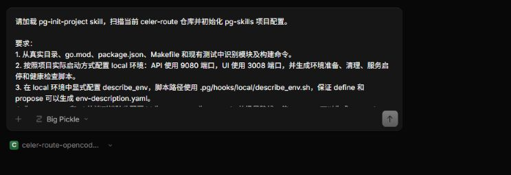
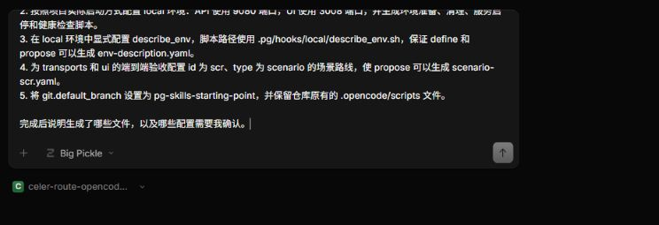
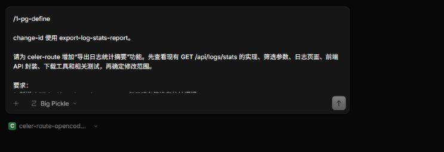
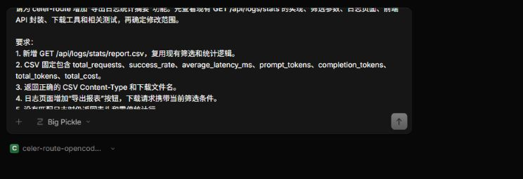
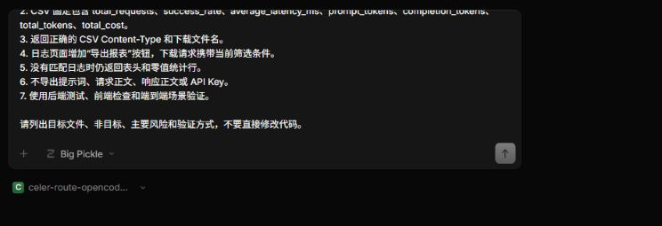
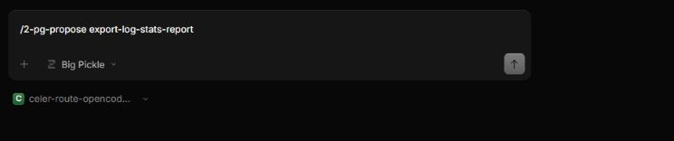
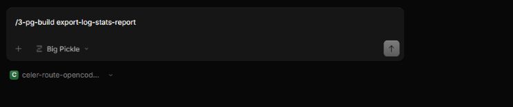
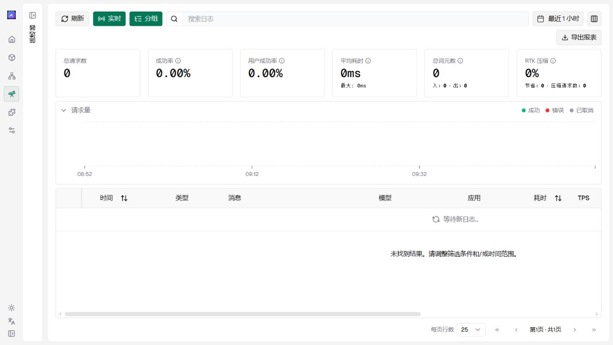

在 celer-route 项目中体验 pg-skills
celer-route 是一个统一管理和路由大模型请求的开源服务，提供多 Provider 接入、请求路由、日志查询、统计分析和可视化管理页面。本教程以该项目为真实代码库，通过增加“导出日志统计报表”功能，完整演示如何使用 pg-skills 完成需求定界、方案生成、代码实现和验证合并。
pg-skills 是一套面向 AI 编程的开发工作流。它把需求定界、方案生成、代码实现和验证合并拆成可检查的步骤，并把关键产物保存在项目中。
标准流：define → propose → build → verify → merge
| 阶段 | OpenCode 命令或 Skill | 主要产物 |
|---|---|---|
| 定界需求 | /1-pg-define、pg-define |
define-summary.yaml、env-description.yaml |
| 生成提案 | /2-pg-propose <change-id>、pg-propose |
proposal.md、design.md、tasks.md、execution-manifest.yaml 和验收场景 |
| 构建实现 | /3-pg-build <change-id>、pg-build |
业务代码、测试和 2-build/ 运行记录 |
| 验证合并 | build 完成后明确要求“verify 并合并”，加载 pg-verify-and-merge |
验证已归档的变更，并把功能分支合并到默认分支 |
SEA（Spec、Environment、Acceptance）是 pg-skills 的方法论。 它要求方案、真实环境和验收条件相互对应：
| 支柱 | 对应产物 | 作用 |
|---|---|---|
| 方案 Spec | proposal.md、design.md、tasks.md |
说明为什么做、怎样实现以及分成哪些任务 |
| 环境 Environment | env-description.yaml |
由 describe_env 只读探测生成，记录本次变更使用的真实环境 |
| 验收 Acceptance | scenario-*.yaml（Gherkin 场景） |
定义可执行的验收条件，并通过实际运行结果证明功能符合方案 |
本教程会从一个尚未接入 pg-skills 的 celer-route 分支开始，完成“导出日志统计报表”功能。完成后，日志页面可以根据当前筛选条件下载 CSV 统计摘要。
阅读说明
本文有两种输入：
- 标注为 PowerShell 的命令在项目根目录的终端中执行；
/*-pg-*命令和任务描述发送到 OpenCode 对话框。
斜杠命令不是终端命令。
第一步：准备项目
Fork 仓库并获取代码
标准流程会在功能分支上执行 build；build 完成后，只有在用户明确要求“verify 并合并”时，pg-verify-and-merge 才会验证、合并并推送到配置的默认分支。因此，开始前先在 GitHub 上 Fork pin-gou/celer-route。本教程仍从官方仓库克隆指定的教学分支，再把自己的 Fork 配置为可写的 origin，这样既能确保起点一致，也能完成后续推送。
在 PowerShell 中执行，先把第一行引号中的内容替换为自己的 GitHub 用户名：
$GitHubUser = '替换为你的 GitHub 用户名'
git clone --branch pg-skills-starting-point --single-branch https://github.com/pin-gou/celer-route.git
cd celer-route
git remote rename origin upstream
git remote add origin "https://github.com/$GitHubUser/celer-route.git"
git push -u origin pg-skills-starting-point
git branch --show-current
python --version
go version
node --version
opencode --version
当前分支应显示 pg-skills-starting-point，origin 指向自己的 Fork，upstream 指向官方仓库。仓库 .nvmrc 声明 Node.js 22.12.0；celer-route 是多 Go module 项目，Go 版本应满足各模块 go.mod 的声明。OpenCode 还应提前配置好可用的模型 Provider。
安装并加载 pg-skills
将 pg-skills 安装到项目，并生成 OpenCode 能够识别的命令和 Agent：
git remote add pg-skills https://github.com/pin-gou/pg-skills.git
git fetch pg-skills --tags
git subtree add --prefix=.pg/skills pg-skills v0.9.3 --squash
python .pg\skills\src\runtime\bin\pg init --tool opencode
安装完成后：
.pg/skills/保存 pg-skills 的公共工作流；.opencode/保存 OpenCode 使用的命令和 Agent；.pg/tool-integration.json记录当前使用的开发工具。
生成项目配置
在项目根目录启动 OpenCode：
opencode
在 OpenCode 中发送：
请加载 pg-init-project skill，扫描当前 celer-route 仓库并初始化 pg-skills 项目配置。
要求：
1. 从真实目录、各模块 go.mod、package.json、Makefile 和现有测试中识别模块及构建命令。
2. 按照项目实际启动方式配置 local 环境：API 使用 9080 端口，UI 使用 3008 端口，并生成环境准备、清理、服务启停和健康检查脚本。
3. 在 local 环境中显式配置 describe_env，脚本路径使用 .pg/hooks/local/describe_env.sh，保证 define 和 propose 可以生成 env-description.yaml。
4. 为 transports 和 ui 的端到端验收配置 id 为 scr、type 为 scenario 的场景路线，使 propose 可以生成 scenario-scr.yaml。
5. 将 git.default_branch 设置为 pg-skills-starting-point，并保留仓库原有的 .opencode/scripts 文件。
完成后说明生成了哪些文件，以及哪些配置需要我确认。


pg-init-project 完成后，重点检查以下产物：
| 产物 | 作用 |
|---|---|
.pg/context/repo-scan.md |
记录从真实仓库识别出的技术栈、模块和构建测试入口 |
.pg/project.yaml |
定义 modules、environments、tracks、stages 和 Git 默认分支 |
.pg/code-review/ |
保存 build 的 review 阶段使用的默认、Go 和 TypeScript 检查规则 |
.pg/hooks/ |
保存环境准备、清理、服务启停、健康检查和 describe_env 只读探测脚本 |
.pg/context/agent-protocol.md |
告诉后续 agent 应从哪里读取项目命令、环境动作和日志路径 |
如果仓库中的 AGENTS.md 与新配置可能发生偏移，还会生成 .pg/context/agents-md-patches.md 供人工检查，但不会直接修改 AGENTS.md。.opencode/ 则由前一步 pg init --tool opencode 创建，保存 OpenCode 加载命令、Skill 和 Agent 所需的工具适配入口。
pg-init-project 完成后，项目已经可以进入 define 阶段。下面的检查不是工作流的必经步骤；本教程为了确认刚生成的配置符合后续场景验收要求，才进行一次额外核对。
可选：检查初始化结果
需要排查配置问题或核对本教程的关键配置时，在 PowerShell 中运行：
python .pg\skills\src\runtime\bin\pg doctor
Test-Path .pg\hooks\local\describe_env.sh
Select-String -Path .pg\project.yaml -Pattern 'describe_env|scr:|type: scenario|default_branch'
pg doctor 检查项目配置是否符合 Schema，并提示未完成的占位配置；Test-Path 确认本教程需要的 describe_env 脚本已经生成；Select-String 只用于显示需要人工核对的配置行。检查结果中，pg doctor 应没有 error 或 placeholder，Test-Path 应返回 True，配置查询结果应包含 describe_env、scr、type: scenario 和 default_branch。
describe_env 只读取服务地址、可用能力和数据状态，不启动服务或修改数据。define 和 propose 会使用它生成的 env-description.yaml 判断验收条件能否在 local 环境中执行。
首次接入时保存配置
这也不是 define 的前置步骤。如果 pg-skills 配置已经提交到仓库，可以直接跳过。本教程刚刚在教学分支上完成首次接入，因此先提交生成的配置，避免后续 build 因工作区存在未提交内容而中断：
git add .pg .opencode
if (Test-Path pg-run) { git add pg-run }
if (Test-Path pg-run.cmd) { git add pg-run.cmd }
git commit -m "chore: integrate pg-skills for OpenCode"
以上检查和提交都不构成新的 pg-skills 阶段。准备完成后，重新启动 OpenCode，输入 / 应能看到 1-pg-define、2-pg-propose 和 3-pg-build，随后即可进入 define。
第二步：明确报表需求
功能目标
celer-route 已经提供日志查询和统计接口。本次练习在现有能力上增加一份 CSV 格式的统计摘要：
- 后端新增
GET /api/logs/stats/report.csv； - 报表复用现有日志筛选和统计逻辑；
- CSV 包含请求数、成功率、平均延迟、Token 数和总费用；
- 日志页面增加“导出报表”按钮，并携带页面当前的筛选条件；
- 报表不包含提示词、请求正文、响应正文或 API Key；
- 后端测试、前端检查和端到端场景均通过。
pg-skills 使用 change-id 组织一次变更的提案产物、代码和运行记录。本次使用：
export-log-stats-report
使用 define 完成定界
在 OpenCode 中一次发送以下完整内容。/1-pg-define 后面的正文就是本次定界任务，不要拆成两次发送：
/1-pg-define
change-id 使用 export-log-stats-report。
请为 celer-route 增加“导出日志统计摘要”功能。先查看现有 GET /api/logs/stats 的实现、筛选参数、日志页面、前端 API 封装、下载工具和相关测试，再确定修改范围。
要求：
1. 新增 GET /api/logs/stats/report.csv，复用现有筛选和统计逻辑。
2. CSV 固定包含 total_requests、success_rate、average_latency_ms、prompt_tokens、completion_tokens、total_tokens、total_cost。
3. 返回正确的 CSV Content-Type 和下载文件名。
4. 日志页面增加“导出报表”按钮，下载请求携带当前筛选条件。
5. 没有匹配日志时仍返回表头和零值统计行。
6. 不导出提示词、请求正文、响应正文或 API Key。
7. 使用后端测试、前端检查和端到端场景验证。
请列出目标文件、非目标、主要风险和验证方式，不要直接修改代码。



define 给出定界总结后，选择 local 环境并确认执行定界后的环境验证。该环节会调用只读的 describe_env 脚本，生成环境描述和定界结果。
定界后的选择
环境验证通过后，OpenCode 会依次询问：
- 是否继续细化真实环境的验证方法；
- 下一步进入 propose、quick-build，还是直接实施。
本次功能涉及后端接口、前端页面和场景验收，应选择 “加载 pg-propose skill 生成产物（推荐）”。选择后，OpenCode 会在当前对话中直接进入 propose，不需要再次输入命令。如果希望手动进入该阶段，也可以输入 /2-pg-propose export-log-stats-report。
define 完成后会生成：
| 文件 | 作用 |
|---|---|
0-define/define-summary.yaml |
保存本次需求的目标、范围、非目标、风险和验证方式 |
env-description.yaml |
保存 describe_env 对当前项目环境的只读探测结果，供 propose 和 build 使用 |
define-summary.yaml 应说明：后端修改位于日志处理器，前端修改位于日志页面和 API 封装，现有统计逻辑会被复用，原始日志内容不属于导出范围。
第三步：生成变更提案
使用 propose
如果 define 结束时已经选择推荐的 propose 路径，可以直接等待提案生成。否则在 OpenCode 中输入：
/2-pg-propose export-log-stats-report

propose 会根据 define 的定界结果生成变更提案。完成后，变更目录中会包含：
.pg/changes/export-log-stats-report/
├── 0-define/
│ └── define-summary.yaml
├── env-description.yaml
├── proposal.md
├── design.md
├── tasks.md
├── execution-manifest.yaml
├── scenario-scr.yaml
└── 1-propose-review/
└── on-conditions-eval.md
提案产物
| 文件 | 作用 |
|---|---|
proposal.md |
说明为什么做、要达到什么结果 |
design.md |
说明后端接口和前端按钮怎样实现 |
tasks.md |
把实现过程拆成可以执行的步骤 |
execution-manifest.yaml |
把任务整理成 build 实际执行的工作清单 |
env-description.yaml |
记录本次任务使用的真实项目环境 |
scenario-scr.yaml |
从日志页面点击下载开始，验收完整功能 |
场景验收路线统一命名为 scr。由于本次变更同时涉及后端接口和前端页面，propose 会生成 scenario-scr.yaml，并在 on-conditions-eval.md 中记录启用原因。
SEA 与本次变更
pg-skills 使用 SEA 让提案、环境和验收相互对应：
| SEA | 本次练习中的内容 |
|---|---|
| Spec | proposal.md、design.md、tasks.md 说明要做什么、怎样实现 |
| Environment | env-description.yaml 说明在哪个真实环境中执行 |
| Acceptance | scenario-scr.yaml 和测试结果说明功能是否真正完成 |
SEA 要求提案产物能够在当前项目环境中执行，并通过测试或场景结果证明功能可用。
核对提案产物
进入 build 前，重点确认：
design.md复用了现有日志筛选和统计能力；- 任务同时包含后端接口、前端按钮和必要测试；
- 场景会验证筛选参数、下载响应头和 CSV 内容。
确认提案产物正确后，在 PowerShell 中保存这些文件：
git add .pg\changes\export-log-stats-report
git commit -m "docs: record log stats report plan"
第四步：执行 build
运行 build 流水线
在 OpenCode 中输入：
/3-pg-build export-log-stats-report

build 会直接读取已经生成的提案产物和任务，不需要再次发送需求。它会依次完成代码修改、测试、代码审查和场景验证，并把过程记录在本次 change 中。流水线成功后，build 会把 change 自动归档到 .pg/changes/archive/，输出完成报告并停止。pg-skills 0.9.3 不允许 agent 自动触发 pg-verify-and-merge，必须等待用户明确指示。
build 完成后可以查看：
| 产物 | 作用 |
|---|---|
| 业务代码 | 实现 CSV 报表接口、前端下载请求和“导出报表”按钮 |
| 测试 | 验证统计复用、CSV 内容、空结果和筛选参数传递 |
2-build/ |
保存各阶段的执行记录、测试报告、场景结果和验证证据；成功后随 change 移入归档目录 |
明确触发验证合并
确认 build 的完成报告后，在 OpenCode 中发送：
请验证并合并 export-log-stats-report。
这条明确指示会加载 pg-verify-and-merge。验证通过后，它会把功能分支合并并推送到配置的默认分支；change 已由 build 提前归档。pg-verify-and-merge 不是需要手动输入的 Slash Command，也不能由 build 自动启动。
第五步：查看最终结果
检查报表功能
完成后，日志页面应出现“导出报表”按钮。点击后下载的 CSV 应满足：
- 使用页面当前的筛选条件；
- 包含约定的七个统计字段；
- 没有数据时仍有表头和零值统计行；
- 不包含日志正文和密钥。
验证代码与场景结果
在 PowerShell 中执行：
go -C transports/celer-route-http test ./handlers -run 'Test(FormatLogStatsCSV|GetLogsStatsReportCSV|ParseLogStatsFiltersMatchesGetLogsStats)' -count=1
Push-Location ui
npx vitest run app/workspace/logs/views/exportLogStatsReportButton.test.tsx
Pop-Location
npm --prefix ui run typecheck
npm --prefix ui run lint
git show --stat --oneline HEAD
Get-ChildItem .pg\changes -Recurse -Filter '*-evidence.json' -File |
Sort-Object LastWriteTime -Descending |
Select-Object -First 1 -ExpandProperty FullName
后端命令只运行本次报表功能对应的测试，Vitest 命令验证“导出报表”按钮，随后执行前端类型检查和 lint。当前仓库的 lint 可能显示既有 warning；退出码为 0 且结果为 0 errors 即表示 lint 通过。git show 显示本次提交的修改范围。最后一组命令输出最新场景证据文件的完整路径；打开该 JSON 文件，确认页面操作、下载请求和 CSV 断言均已通过。该文件是 SEA 中 Acceptance 的实际验收证据。代码、测试和场景结果一致时，本次练习就完成了。
完成后的页面
完成后，日志页面会显示“导出报表”按钮。点击该按钮即可按当前筛选条件下载日志统计 CSV。

后续学习
本教程已经完成 define、propose、build，以及由用户明确触发的 verify 和 merge 标准流程。接下来可以尝试其他工作流：
| 工作流 | OpenCode 命令 | 适用场景 |
|---|---|---|
| 自动驾驶 | /0-pg-auto-pilot |
用户明确授权后，让 AI 自主规划和实施，并在选定的真实环境中验证结果 |
| 需求压力测试 | /1-pg-grill |
检查需求或方案中的遗漏和矛盾 |
| 快速构建 | /2b-pg-quick-build |
小范围、边界明确的修改 |
| 回归测试 | /4-pg-regression |
执行项目已有的回归测试套件 |
| 问题修复 | /5-pg-fix-issue |
修复已经确认且可以复现的问题 |
| 手动归档 | /6-pg-archive <change-id> |
归档失败、取消或不再继续的变更 |
进一步阅读：
- pg-skills 完整介绍：了解 SEA 方法论、标准流程、快捷流和新项目接入方式。
- 开发工具适配器说明：了解 pg-skills 如何接入 OpenCode 等开发工具。
遇到初始化、命令加载或工作流中断时，可以先返回 pg-skills 首页 查阅常见问题与速查卡。